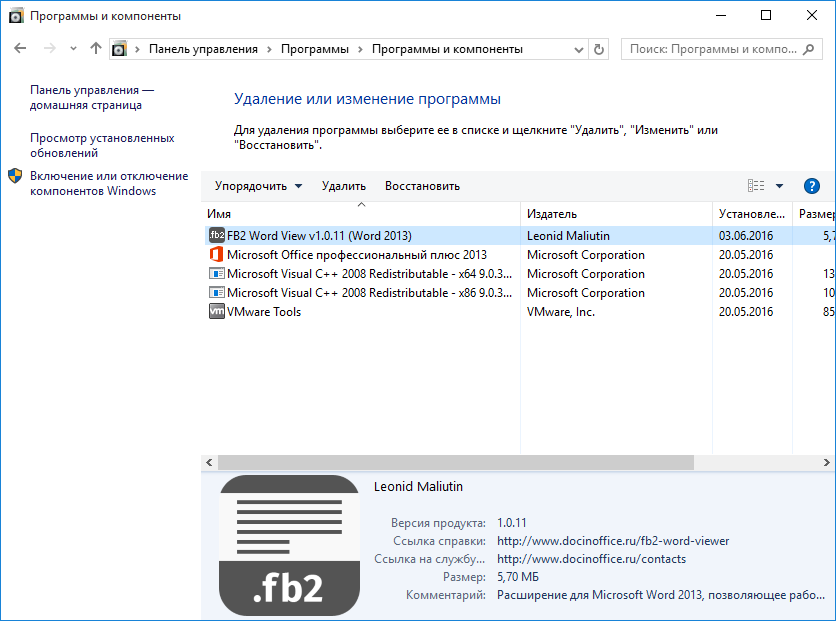

Для того, чтобы удалить программу FB2 Word Viewer с компьютера нужно открыть окно "Программы и компоненты", выбрать запись, связанную с FB2 Word Viewer, и запустить процесс удаления.

После окончания процесса удаления программа FB2 Word Viewer будет удалена с компьютера.